ТЕРМИНДАР
Арабка-Араб алмасы. Дәмі қышқыл, көлемі-ірі, түсі-қоңыр қызыл.
Бабушкино яблока-алма сортының ең үздік түрі. Көлемі жеңіл. Дәмі-қышқыл. Ерекшелігі: ұзақ сақтауға жарамды. Түсі-сарғыш жасыл.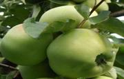
Бабукъ-дала қояны.
Багамское дерево-Қызыл ағаш.
Баденская кукуруза - Жүгерінің ерекше сорты. Ірілігімен ерекшеленеді.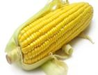
Базадскій скотъ - Ірі қара мал, жұмысқа жегу үшін қолданылған.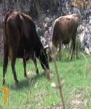
Бальдебуковская овца - Неміс қойы.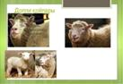
Банатка - Венгриядан таралған бидай түрі. Бидайдың гүлшоғыры қызыл түстес.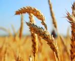
Барбера - Аса бағалы жүзім. Ерекшелігі: жидектері өте кеш піседі.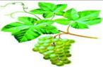
Барибаль - Қара аю (Солтүстік Америка). Америкалықтар тәтті еті үшін үздіксіз аулаудан жалықпайды.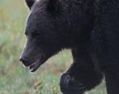
Барловское яблоко - Керемет алма сорты. Патша бақтарында өсірілген.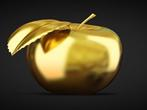
Барковское яблоко - Сары алманың ерекшелігі: аса керемет көрінісі және тәтті дәмімен жоғары бағаланады.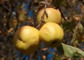
Барсучья - Иттің түрі.
Бастръ - Қант түрі.
Баттельматскій сыръ - Сиыр сүтінен әзірленген қатты ірімшік.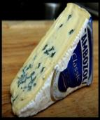
Бахматы - Алыс жолға төзімділігімен бағаланатын жылқы.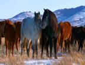
Бебу - Күріш сортының түрі. (Кавказ).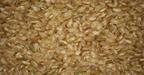
Бегеневоское масло - Хош иісті, тағамдарға қолданылатын май.
Бедана - Кавказдың тұт ағаштары.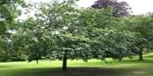
Безколючья рыбы - Сүйекті балықтардың қатарына жатады.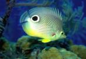
Без крылыя птицы - Аяқтарының мықтылығымен, түнде ұшатын құс. Тұмсықтары ұзын, түкті қауырсындары болады.
Безчутая - Ііс сезімі нашар иттің түрі.
Бекасиныя - Жұптасып өмір сүреді, жақсы жүгіреді және жылдам ұша алатын құс.
Буссоікъ - Ақ және қара түсті жүзім.
Бъялякъ - Қоянның түрі. Ерекшелігі: ұсақ қояндардың түріне жатқызылады, тауда, суық аймақтарда тіршілік етеді.
Букетъ - Шараптың тамаша үздік сорты.
Бурловка - Сары түстес алма.
Брюхоперья рыбы - Қабықшалы, көпіршікті балық түрі.
Буланый - Жылқы тұқымдасы.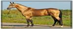
Буреломъ - Түлкі тұқымдасы.
Бурьянь - Оңтүстік Ресейде өсірілетін ең үлкен шөп.
Будешури - Жүзім сорты.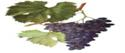
Буръніе - Бұл жүзімнің ерекшелігі; ауруға бірден-бір ем. Дәмі қайталанбас дәм.
Бургундеръ - Жақсы және бағалы жүзім сорты.
Вермутъ - Жүзім сорты.
Волошки - Молдовиялық қалың түкті ит тұқымдасы.
Вологодская - Ең үлкен еменнің түрі. Түсі, қызыл-қошқыл.
Вязель - Көпжылдық өсімдік, жапырақтары кемінде 11-25 жқһұп болып өседі, және доға тәріздес. Гүлшоғыры қызыл түстес. Еуропада Азияда өсіріледі. Халқаралық дәрілік өсімдік.
Вятская лошадь - Орыс жылқысы. Асыл тұқымды. Казан губерниясында мекендейді. Сол жерде жерсіндірілген. Кемінде екі түрі кездеседі.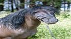
Ворванъ - Ең үлкен балық. Түсі боз түстес. Бірақ бұл балықтан жағымсыз иіс тарайды.
Восковое яблоко - Ең үздік алма сорты.
Выводковыя птицы - Балапандарды екі жұмыртқадан артық баспайды.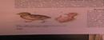
Гаршнепъ - Ең кішкентай құс. Ұзындығы 40 см. Қанаты қысқа. Солтүстік Еуропа және Азияда мекендейді.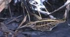
Гальки - Тауда, суық аймақтарда тіршілік етен қарға тұқымдасына жататын құс.
Галенбергіский сыръ - Аустралияда әзірленеді. Ең бастыс, Сиыр сүтінен дайныдалады.
Галобатиды - Теңіз клопы.
Гага - Теңіздің алып құсы.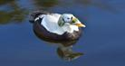